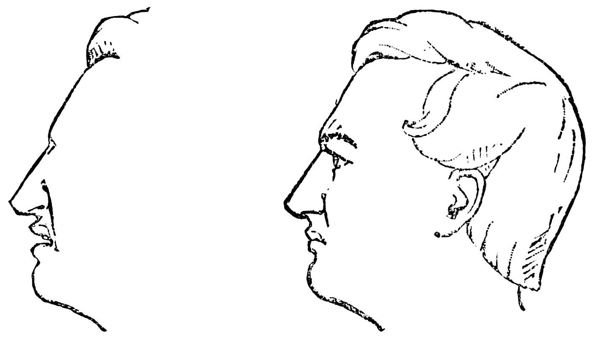

For the album by Trash Boar, see Crown Shyness (album)
Crown shyness (also canopy disengagement,[1] canopy shyness, [2] or inter-crown spacing[3]) is a phenomenon observed in some tree species, in which the crowns of fully stocked trees do not touch each other, forming a canopy with channel-like gaps.[4][5] The phenomenon is most prevalent amount trees of the same species, but also occurs between trees of different species. [6][7] There exist many hypotheses as to why crown shyness is an adaptive behavior, and research suggests that it might inhibit spread of leaf-eating insect larvae.[8]
The exact physiological basis of crown shyness is uncertain.[6] It has been discussed in scientific literature since the 1920s.[9] The variety of hypotheses and experimental results might suggest that there are multiple mechanisms across different species, an example of convergent evolution.[citation needed]
Some hypotheses contend that the interdigitation of canopy branches leads to "reciprocal pruning" of adjacent trees. Trees in windy areas suffer physical damage as they collide with each other during winds. The abrasions and collisions induce a crown shyness response. Studies suggest that lateral branch growth is largely uninfluenced by neighbours until disturbed by mechanical abrasion.[10] If the crowns are artificially prevented from colliding in the winds, they gradually fill the canopy gaps.[11] This explains instances of crown shyness between branches of the same organism. Proponents of this idea cite that shyness is particularly seen in conditions conducive to this pruning, including windy forests, stands of flexible trees, and early succession forests where branches are flexible and limited in lateral movement.[6][12]According to this theory, variable flexibility in lateral branches greatly influences the degree of crown shyness.
Not to be confused with ressentiment.
This article is about the emotion. For other uses, see Resentment (disambiguation).
Resentment (also called ranklement or bitterness) is a complex, multilayered emotion [1] that has been described as a mixture of disappointment, disgust, and anger. [2] Other psychologists consider it a mood[3] or as a secondary emotion (including cognitive elements) that can be elicited in the face of insult and/or injury.[4]
Inherent in resentment is a perception of unfairness (i.e. from trivial to very serious), and a generalized defense against unfair situations (e.g. relationships or unfavourable circumstances).[3]
The word originates from French "ressentir", re-, intensive prefix, and sentir "to feel"; from the Latin "sentire". The English word has become synonymous with anger, spite, and holding a grudge.
Resentment can result from a variety of situations involving a perceived wrongdoing from an individual, which are often sparked by expressions of injustice or humiliation. Common sources of resentment include publicly humiliating incidents such as accepting negative treatment without voicing any protest; feeling like an object of regular discrimination or prejudice; envy/jealousy; feeling used or taken advantage of by others; and having achievements go unrecognized, while others succeed without working as hard. Resentment can also be generated by dyadic interactions, such as emotional rejection or denial by another person, deliberate embarrassment or belittling by another person, or ignorance, putting down, or scorn by another person.[5]
Resentment can also develop, and be maintained by: focusing on past grievances (i.e. disturbing memories of hurtful experiences) continuously,[3] or by trying to justify the emotion (i.e. with additional thoughts/feelings).[6][7] Thus, resentment can occur as a result of the grief process[8] and can be sustained by ruminating.[9]